1969-1976 Corvette Wiper Motor Bench Testing and Some Relay Repair Help
Willcox Corvette Wire Testing a 69-76 Corvette Wiper Motor and some relay repair help
Willcox Corvette Wire Testing a 69-76 Corvette Wiper Motor and some relay repair help
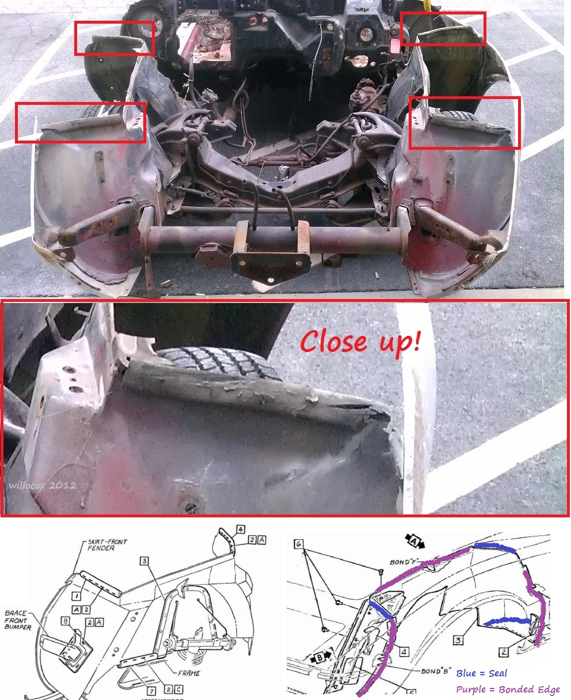
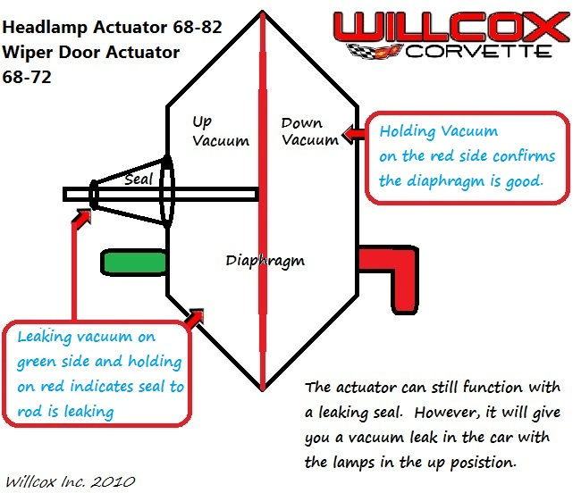
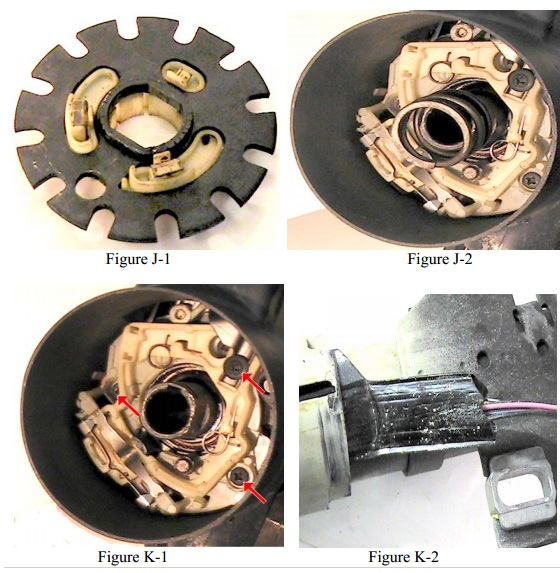
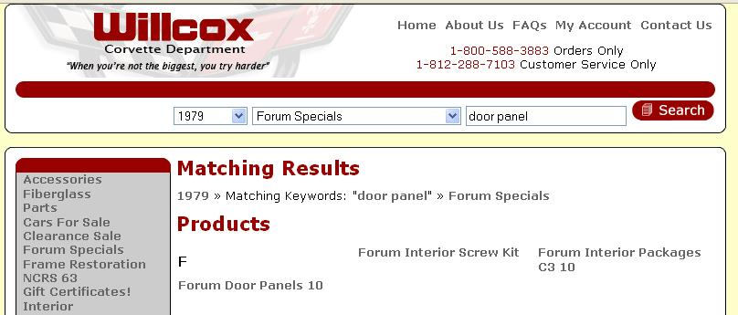
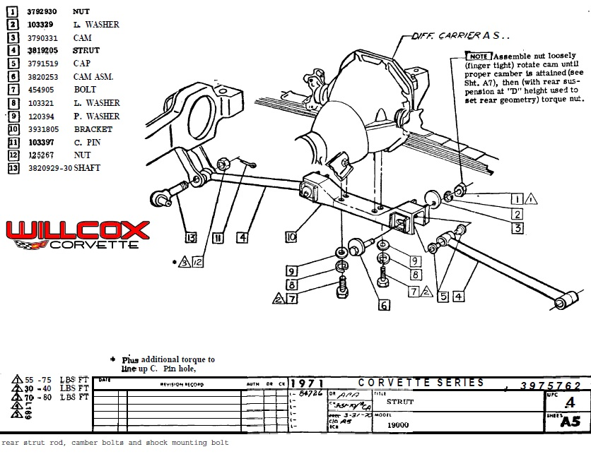
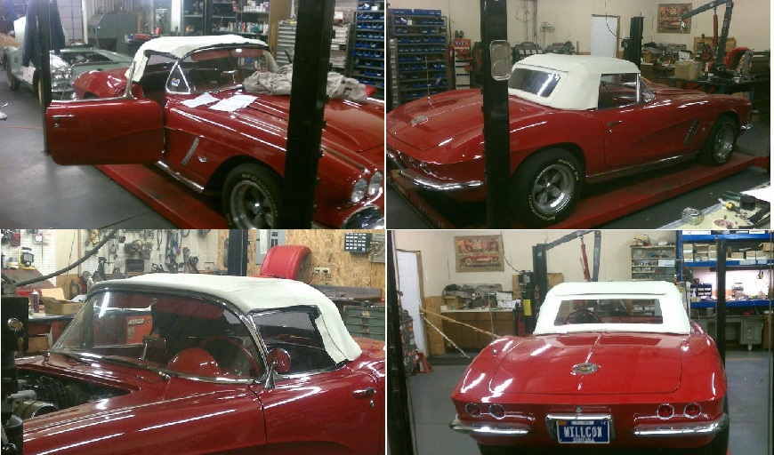
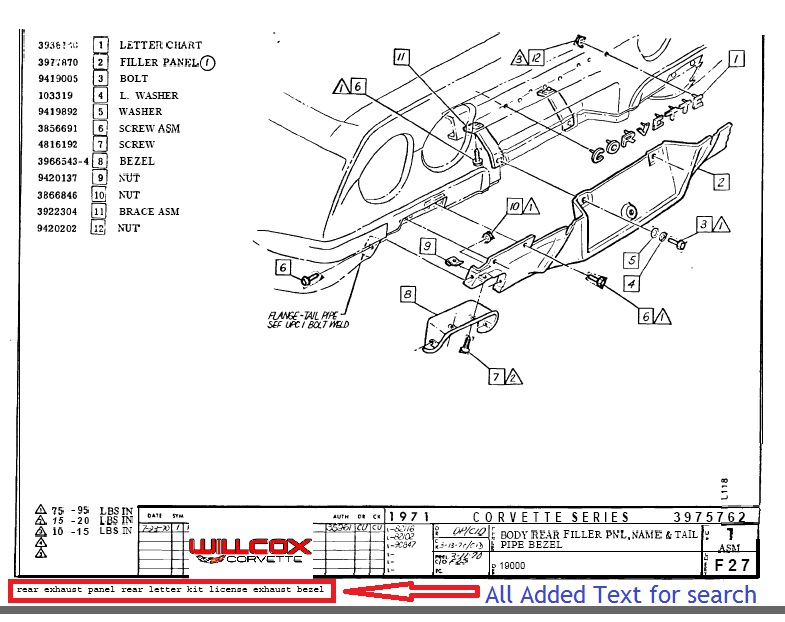
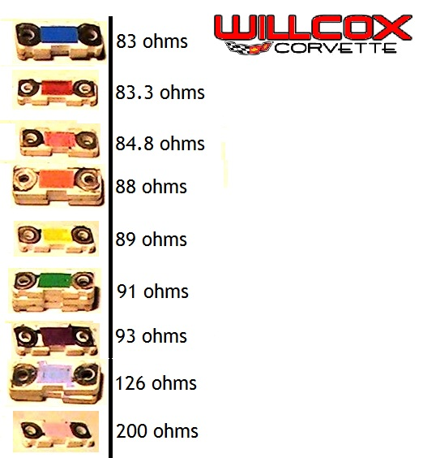
Power Steering Control Valve Rebuild Video 63-82
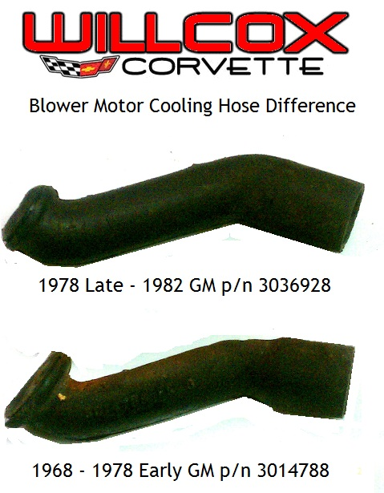
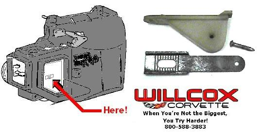
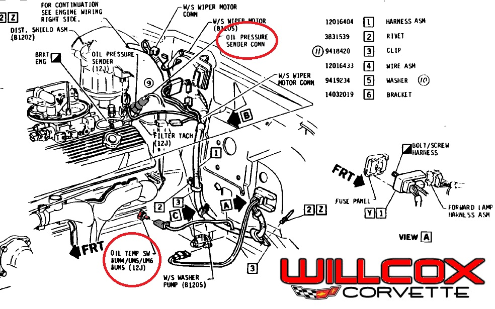
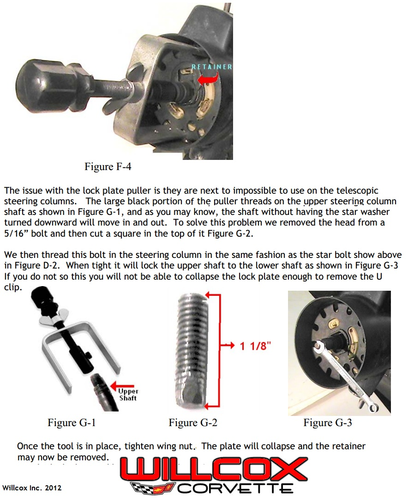
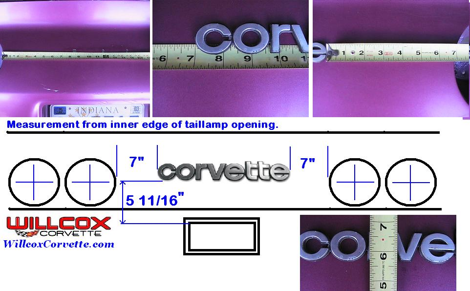
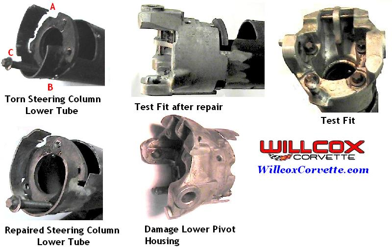
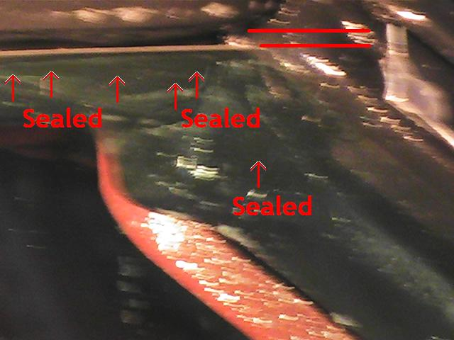
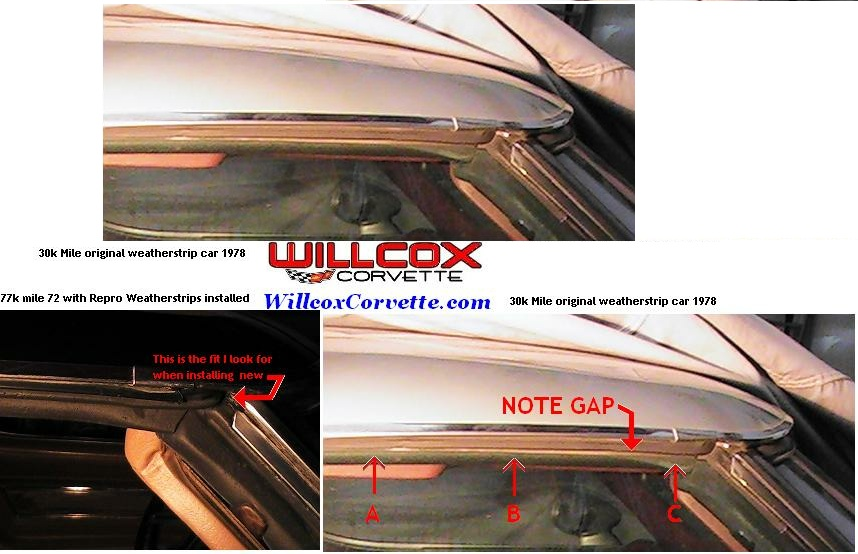
68-82 Pillar Weatherstrip Fitment
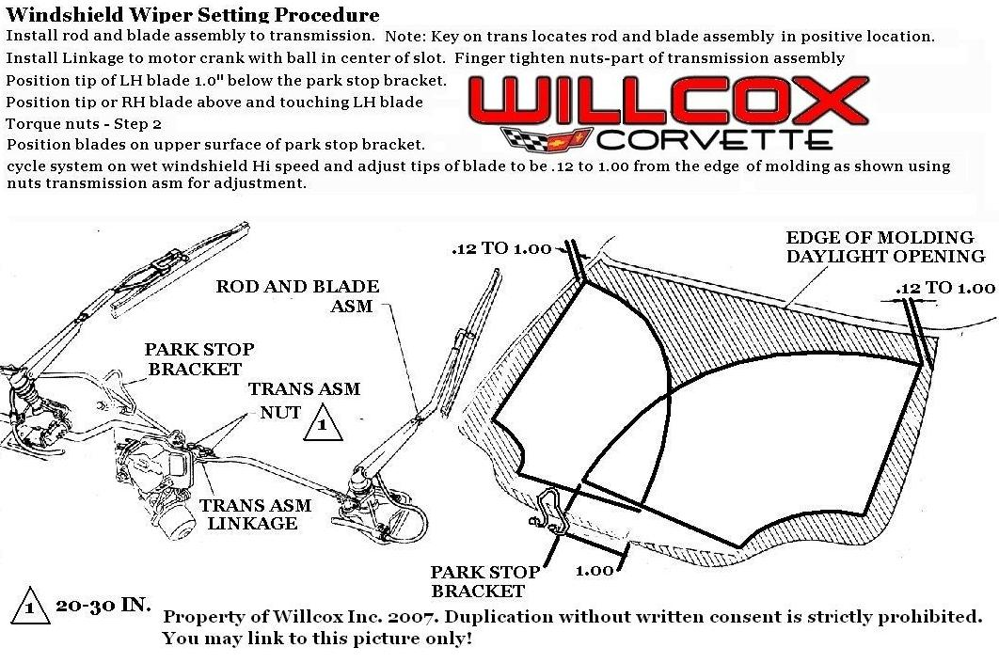